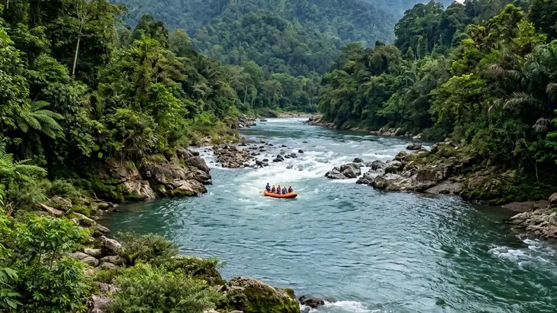

Provider rafting Malang terbaik dipilih berdasarkan standar keselamatan, pengalaman pemandu, kelengkapan alat, dan kejelasan rute jeram yang ditawarkan kepada wisatawan.
- Provider rafting terpercaya di Malang umumnya memiliki pemandu bersertifikat dan alat keselamatan standar.
- Dua kawasan sungai yang paling sering digunakan untuk rafting di Malang Raya adalah Sungai Kaliwatu di Pujon dan Sungai Kasembon di perbatasan Malang-Kediri.
- Tingkat kesulitan jeram bervariasi dari pemula hingga menengah, sehingga cocok untuk keluarga maupun kelompok outbound.
- Biaya paket rafting biasanya dipengaruhi oleh jarak lintasan, fasilitas tambahan, dan jumlah peserta dalam satu perahu.
- Memilih provider yang tepat mengurangi risiko kecelakaan dan meningkatkan kenyamanan selama aktivitas berlangsung.
Apa Itu Provider Rafting dan Mengapa Pemilihannya Penting?
Provider rafting adalah penyedia jasa yang mengelola operasional arung jeram, mulai dari pemandu, perahu, alat keselamatan, hingga rute sungai yang digunakan wisatawan.
Peran provider rafting tidak hanya menyediakan perahu karet, tetapi juga bertanggung jawab atas keselamatan seluruh peserta selama berada di sungai. Provider yang berpengalaman biasanya memiliki prosedur briefing keselamatan sebelum peserta turun ke air, termasuk cara menggunakan pelampung, helm, dan dayung dengan benar.
Pemilihan provider menjadi penting karena kondisi jeram sungai dapat berubah tergantung musim dan debit air. Provider yang memahami karakter sungai secara mendalam akan lebih siap mengambil keputusan cepat saat kondisi arus tidak stabil, misalnya menunda keberangkatan atau mengubah titik start apabila debit air dinilai terlalu tinggi.
Di kawasan Malang Raya, aktivitas rafting umumnya terpusat di dua sungai utama, yaitu Sungai Kaliwatu di wilayah Pujon dan Sungai Kasembon yang berada di perbatasan Kabupaten Malang dengan Kediri. Kedua sungai ini memiliki karakter jeram yang relatif bersahabat untuk pemula, namun tetap menawarkan sensasi arung jeram yang menantang.
Apa Saja Kriteria Provider Rafting Malang yang Terpercaya?
Provider rafting Malang yang terpercaya umumnya memiliki pemandu berpengalaman, alat keselamatan lengkap dan terawat, prosedur briefing yang jelas, serta rute jeram yang dikelola secara konsisten.
Beberapa kriteria yang dapat dijadikan acuan sebelum memilih provider antara lain:
- Pemandu memiliki pengalaman menangani jalur sungai yang sama secara rutin, bukan sekadar mengetahui teori dasar rafting.
- Alat keselamatan seperti pelampung, helm, dan tali penyelamat tersedia dalam kondisi layak pakai dan diperiksa secara berkala.
- Provider menyediakan sesi pengarahan keselamatan sebelum peserta turun ke sungai, termasuk simulasi posisi aman saat perahu terbalik.
- Terdapat tim pendukung di sepanjang rute, seperti petugas di titik-titik tertentu yang siap membantu jika terjadi situasi darurat.
- Provider transparan mengenai batasan usia, kondisi kesehatan, dan syarat peserta yang boleh mengikuti rafting.
Wisatawan disarankan menanyakan detail ini secara langsung kepada pihak provider sebelum melakukan pemesanan, terutama jika membawa peserta anak-anak, lansia, atau orang dengan riwayat kesehatan tertentu.
Provider Rafting Apa Saja yang Populer di Kawasan Malang?
Dua nama yang paling sering dikenal wisatawan untuk aktivitas rafting di kawasan Malang Raya adalah operator yang beroperasi di Sungai Kaliwatu, Pujon, dan operator yang beroperasi di Sungai Kasembon.
Operator rafting di Sungai Kaliwatu umumnya menawarkan jarak lintasan yang lebih pendek dengan tingkat kesulitan jeram yang cenderung ramah untuk pemula, sehingga sering menjadi pilihan keluarga atau kelompok yang baru pertama kali mencoba rafting. Lokasinya yang berada di kawasan Pujon juga membuat suasana sekitar sungai relatif sejuk dan asri, cocok dipadukan dengan aktivitas wisata alam lain di sekitarnya.
Sementara itu, operator rafting di Sungai Kasembon dikenal dengan lintasan yang sedikit lebih panjang dan variasi jeram yang lebih beragam. Sungai ini kerap menjadi pilihan kelompok outbound perusahaan atau komunitas yang menginginkan pengalaman arung jeram dengan durasi lebih lama.
Selain dua kawasan utama tersebut, beberapa operator lokal skala kecil juga menawarkan paket rafting musiman di titik-titik sungai lain di wilayah Malang Selatan, meskipun ketersediaannya lebih terbatas dan sangat bergantung pada kondisi debit air.
Bagaimana Cara Memilih Operator Rafting yang Aman?
Cara memilih operator rafting yang aman adalah dengan memeriksa kelengkapan alat keselamatan, pengalaman pemandu, ulasan wisatawan sebelumnya, serta kejelasan prosedur darurat yang diterapkan.
Langkah praktis yang dapat dilakukan calon peserta antara lain:
- Membaca ulasan dari wisatawan lain di platform perjalanan atau media sosial untuk mendapatkan gambaran pengalaman nyata.
- Menanyakan langsung kepada provider mengenai rasio jumlah pemandu dibanding jumlah peserta dalam satu perahu.
- Memastikan provider memberikan asuransi kecelakaan dasar sebagai bagian dari paket, meskipun cakupannya dapat berbeda antar operator.
- Mengecek apakah provider memiliki izin operasional resmi dari otoritas pariwisata setempat.
- Memperhatikan kondisi fisik alat seperti perahu, dayung, dan pelampung saat tiba di lokasi sebelum memutuskan untuk melanjutkan aktivitas.
Faktor cuaca juga perlu diperhatikan. Provider yang bertanggung jawab biasanya tidak segan menunda atau membatalkan jadwal rafting apabila kondisi cuaca dan debit air dinilai berisiko, meskipun hal ini dapat mengecewakan wisatawan yang sudah merencanakan jadwal jauh-jauh hari.
Berapa Kisaran Biaya Rafting di Malang?
Biaya rafting di Malang umumnya bervariasi tergantung jarak lintasan, fasilitas tambahan seperti transportasi dan konsumsi, serta jumlah peserta dalam satu kelompok pemesanan.
Secara umum, paket rafting dengan jarak lintasan lebih pendek cenderung dibanderol lebih terjangkau dibandingkan paket dengan jarak lintasan lebih panjang. Beberapa provider juga menawarkan paket tambahan seperti dokumentasi foto atau video, makan siang, dan transportasi antar-jemput dari titik kumpul tertentu, yang tentu memengaruhi total biaya yang harus dikeluarkan peserta.
Harga juga dapat dipengaruhi oleh musim kunjungan. Pada musim liburan atau akhir pekan, sebagian provider menerapkan harga standar tanpa promosi, sedangkan pada hari kerja atau musim sepi wisatawan, beberapa operator kerap menawarkan potongan harga untuk menarik minat pengunjung.
Wisatawan disarankan untuk membandingkan beberapa provider sebelum memutuskan, bukan hanya dari sisi harga, tetapi juga dari kelengkapan fasilitas dan standar keselamatan yang ditawarkan. Harga yang jauh lebih murah dari rata-rata pasar sebaiknya menjadi perhatian khusus, karena dapat mengindikasikan pengurangan standar keselamatan atau kualitas alat.
Apa Saja Kesalahan Umum Saat Memesan Provider Rafting?
Kesalahan umum saat memesan provider rafting adalah tidak memeriksa ulasan sebelumnya, mengabaikan kondisi kesehatan peserta, dan hanya berpatokan pada harga termurah tanpa mempertimbangkan standar keselamatan.
Beberapa kesalahan yang kerap terjadi antara lain:
- Memesan paket tanpa mengonfirmasi ulang jadwal, terutama saat musim hujan yang berpotensi mengubah kondisi debit air sungai.
- Tidak menyampaikan riwayat kesehatan tertentu kepada pihak provider, misalnya kondisi jantung atau masalah pernapasan.
- Membawa barang berharga seperti ponsel atau dompet tanpa pelindung tahan air ke dalam perahu.
- Mengabaikan instruksi pemandu selama sesi briefing karena merasa sudah familiar dengan aktivitas air.
- Memilih provider hanya berdasarkan harga termurah tanpa mempertimbangkan reputasi dan standar keselamatan operator.
Menghindari kesalahan-kesalahan ini dapat membantu peserta menikmati pengalaman rafting dengan lebih nyaman dan minim risiko yang tidak perlu.
Tips Memaksimalkan Pengalaman Rafting Bersama Provider Terpilih
Tips memaksimalkan pengalaman rafting adalah datang lebih awal untuk sesi briefing, mengenakan pakaian yang sesuai, dan mengikuti seluruh instruksi pemandu selama berada di sungai.
Beberapa hal yang dapat diperhatikan peserta sebelum dan selama aktivitas berlangsung:
- Mengenakan pakaian yang cepat kering dan alas kaki yang tidak licin, seperti sandal gunung atau sepatu khusus air.
- Membawa pakaian ganti dan handuk karena tubuh dipastikan akan basah selama aktivitas berlangsung.
- Tiba lebih awal dari jadwal agar tidak terburu-buru saat sesi pengarahan keselamatan.
- Mengikuti instruksi pemandu terkait posisi duduk dan cara mendayung yang benar sejak awal keberangkatan.
- Menjaga kekompakan tim dalam satu perahu, karena koordinasi antar peserta turut memengaruhi kelancaran saat melewati jeram.
Kombinasi antara provider yang tepat dan persiapan peserta yang matang akan memberikan pengalaman rafting yang lebih menyenangkan sekaligus tetap mengutamakan keselamatan.
Pembahasan Lengkap Seputar Topik Terkait
Untuk melengkapi pemahaman mengenai aktivitas rafting di Malang, beberapa artikel berikut membahas aspek yang lebih spesifik dan dapat dijadikan referensi tambahan sebelum memesan paket:
- Panduan memilih jasa rafting yang aman di Malang membahas lebih detail mengenai standar keselamatan operator.
- Rincian biaya dan paket rafting di Malang mengulas komponen harga secara lebih mendalam.
- Kesalahan umum saat memesan jasa rafting di Malang memberikan gambaran lebih lengkap mengenai hal-hal yang perlu dihindari peserta.
Sebagai referensi tambahan mengenai standar keselamatan aktivitas wisata air secara umum, wisatawan juga dapat merujuk pada panduan keselamatan wisata petualangan yang dipublikasikan oleh Kementerian Pariwisata dan Ekonomi Kreatif Republik Indonesia.
FAQ
Apakah rafting di Malang aman untuk pemula?
Rafting di Malang umumnya aman untuk pemula selama memilih provider dengan standar keselamatan yang jelas dan mengikuti seluruh instruksi pemandu selama aktivitas berlangsung.
Berapa usia minimal untuk mengikuti rafting di Malang?
Batasan usia minimal biasanya ditentukan oleh masing-masing provider dan dapat berbeda-beda, sehingga sebaiknya dikonfirmasi langsung sebelum melakukan pemesanan.
Apakah peserta yang tidak bisa berenang boleh mengikuti rafting?
Peserta yang tidak bisa berenang umumnya tetap diperbolehkan mengikuti rafting selama menggunakan pelampung sesuai standar dan mengikuti arahan pemandu dengan disiplin.
Arya
penulis artikel yang sudah berpengalaman di dalam dunia wisata outbound Batu Malang.